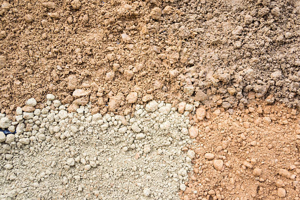
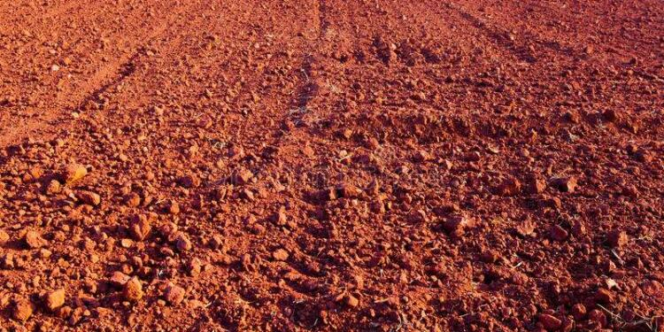

RED SOIL

Red soil is predominant in Tamil Nadu, covering about 70% of the state's agricultural land. It is well-drained, porous, and rich in iron oxides. Red soil is suitable for growing crops like millets, pulses, groundnuts, and cotton. Red soil is primarily found in Sivagangai and Ramanathapuram.
BLACK SOIL

Black soil, also known as regur soil, is found in parts of Tamil Nadu. It is rich in calcium, magnesium, and phosphorous, making it suitable for cultivation of crops like cotton, sorghum, maize, and pulses. Black soil is found in Madurai, Virudhunagar, etc.
ALLUVIAL SOIL
Alluvial soil is found in river basins and deltas, particularly along the Cauvery and Vaigai rivers. It is fertile and suitable for growing a wide range of crops, including rice, sugarcane, pulses, and vegetables. Alluvial soil is found in Nagapattinam, Kanyakumari.
LATERITE SOIL
Laterite soil is common in hilly regions of Tamil Nadu. It is acidic and lacks fertility, but with proper management and fertilization, it can be used for cultivation of cashew, tea, coffee, and spices. Laterite soil is found in parts of Kancheepuram, Thanjavur, etc.